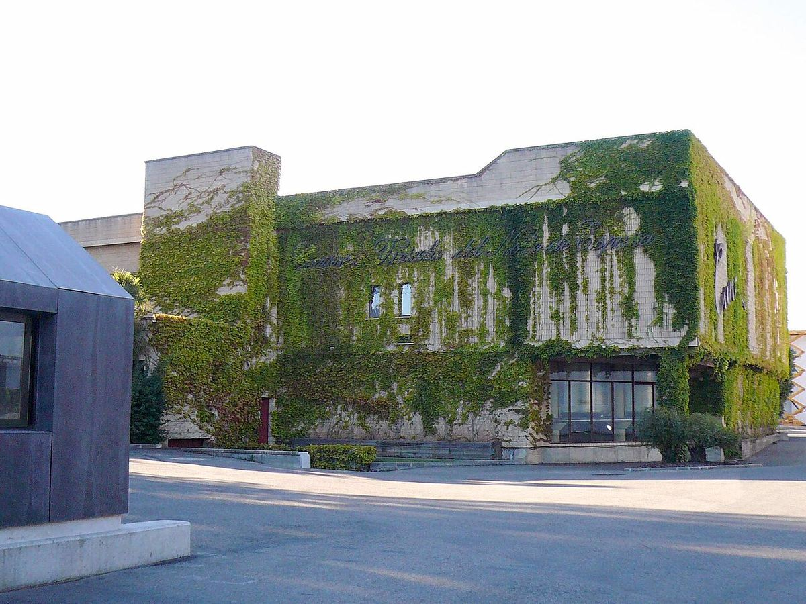

WHITE
House founded in Haro in 1879 by the Real de Asúa brothers, behind classic Rioja brands such as Cune, Imperial, Viña Real and Monopole.

The Compañía Vinícola del Norte de España was founded in 1879 in Haro by brothers Eusebio and Raimundo Real de Asúa, originally from Bilbao. Its initials, CVNE, became popular in the form “Cune”, which eventually gave its name to one of its best-known ranges. The company remains in the hands of descendants of the founding family and is one of the emblematic houses of the Station District.
Its historic premises in Haro include an ageing hall built in the early twentieth century with a metal structure free of intermediate columns, which allowed barrels to be moved freely. Over time the group expanded with the Viña Real winery in Laguardia, in Rioja Alavesa, and with Contino, an estate vineyard with its own winery in the same subzone.
CVNE’s range is broad and covers different Rioja styles. Cune groups young and crianza wines intended for everyday drinking; Imperial brings together the house’s most classic reservas and gran reservas, made in Haro; Viña Real reflects the character of Rioja Alavesa; and Monopole is a long-established white wine brand.
The overall style is that of classic Rioja, barrel-aged and balancing fruit, acidity and oak notes, in versions ranging from the most accessible to the most ambitious.
It offers guided tours of its historic premises in Haro with a tasting, by prior booking.